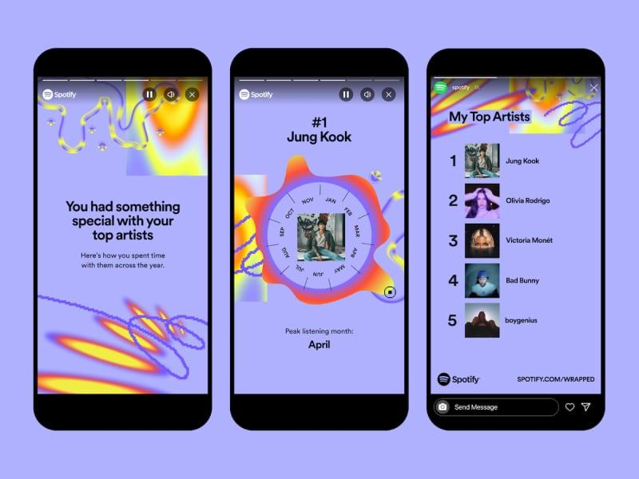
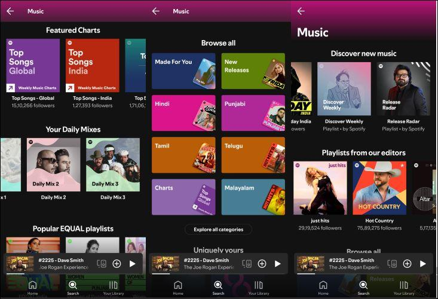
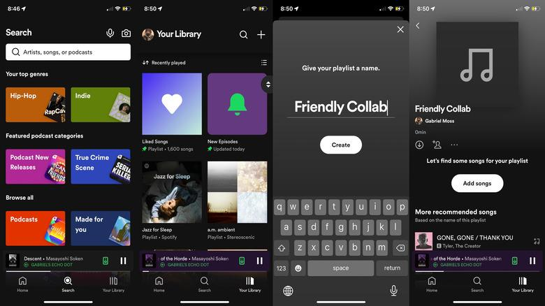
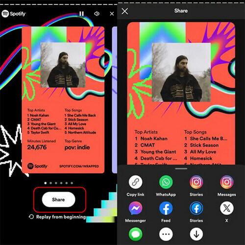
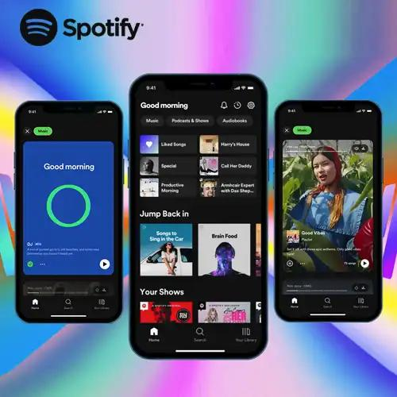
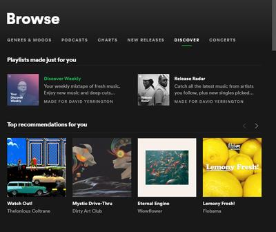

Spotify — Master of Referral
Spotify's core organic growth model isn't built on paid advertisement; it is powered by viral design loops that turn casual listeners into active brand evangelists.

Compounding the Viral Invite Loop
Spotify Blend
Blend acts as a high-intent referral hook. By allowing users to invite friends to create a shared, daily-updating playlist that algorithmically merges their music tastes, Spotify gamifies social connection. The generated "Taste Match Score" and shared listening insights turn a simple playlist into a viral social asset that practically forces users to invite their inner circle.
3 Months Premium Free
To completely eliminate the friction of shared link conversions, Spotify leverages a highly persuasive acquisition offer: 3 Months of Ad-Free Premium for Free. When a referred user enters the ecosystem, this prolonged trial removes all financial barriers. This guarantees that incoming referrals reach habituation and lock into the platform's UX long before encountering a paywall.
The Psychology of Referral
Music consumption is a profoundly intimate ritual. Spotify deliberately treats individual listening data as a form of social currency.
Social Identity
Music choices are an extension of the self. Users broadcast tracks and customized editorial layouts across external channels because sharing curated music functions as a means of identity projection.
Social Proof
Discovering specific titles or artists through the listening profiles of trusted peers validates creative tastes, converting casual discovery behavior into organic peer recommendations.
Status Signaling
Annual recaps like Spotify Wrapped repackage aggregate backend logs into visually stunning social assets, encouraging users to publish metrics that elevate their digital standing.
The Collaborative Growth Moat
Features like Spotify Blend build a powerful network effect right into the platform. By generating an automated, shared playlist that blends the real-time taste profiles of two friends, Spotify creates a product experience that requires collaborative participation.

The Viral Loop Flywheel
Product Analyst Dashboard
Viral Coefficient Framework
| Metric | Analytical Definition | Growth Impact |
|---|---|---|
| Shares Per User | Average frequency of cross-platform share interactions triggered within a specific timeframe. | Maximize |
| Viral Coefficient (K-Factor) | Total volume of sent referral invitations multiplied by the conversion success rate. (K > 1 triggers exponential growth). | Target K > 1 |
| Playlist Creation Rate | The rate of active user playlist creations, which directly feeds into downstream sharing funnels. | Maximize |
| Invite Conversion Rate | Percentage of peer referral links that result in a new account creation via the 3-Month trial. | Maximize |
Analyst Insights
Viral Loop Efficiency
Spotify Wrapped isn't a marketing gimmick; it's a structural loop. By converting private streaming patterns into public social assets, Spotify drives down customer acquisition costs (CAC) to near-zero during the first week of December every single year.
Social Feature Engagement
Features like Spotify Blend create an explicit retention and referral trap. Because the product's utility increases linearly with the inclusion of an additional friend's listening data, users become primary growth agents, driving invite conversions naturally.
Referral Conversion Moats
The 3-Month Ad-Free trial serves as a strategic bridge. By pairing peer-to-peer social validation with a frictionless, long-tail promotional tier, Spotify smoothly guides referred users past the critical initial drop-off point directly into core product habituation.



